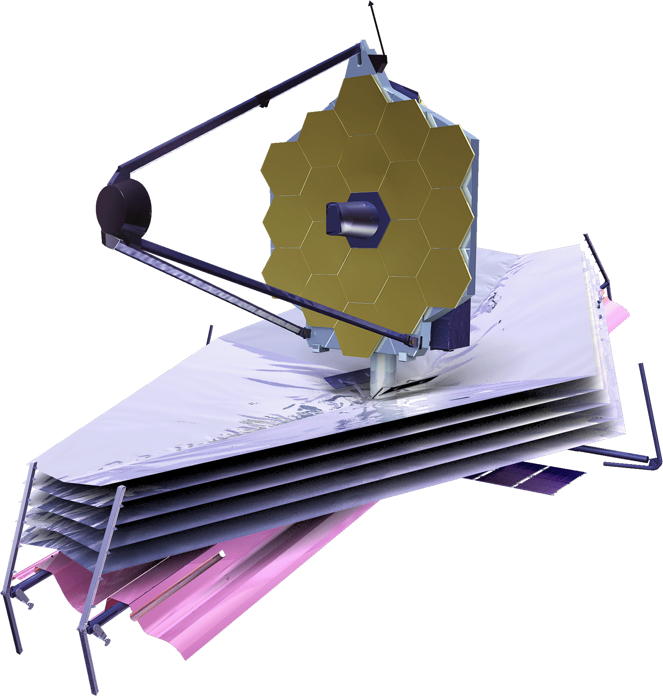
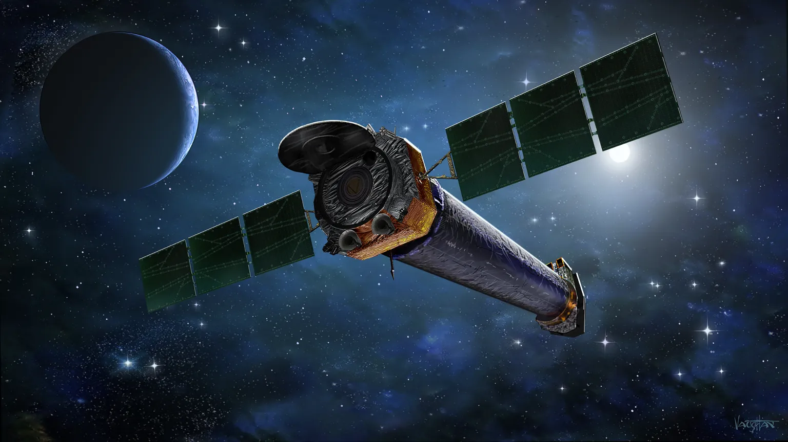
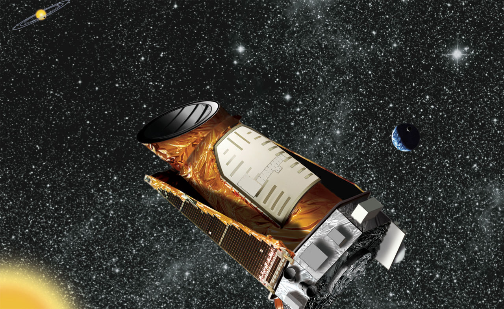

Az űrtávcsövek forradalmasították a világegyetem megértését. Ezek az eszközök a Föld légkörén kívülről figyelik a csillagokat,
galaxisokat és bolygókat, lehetővé téve számunkra, hogy olyan részleteket lássunk, amelyek a földi teleszkópokkal elérhetetlenek.
Az űrtávcsövek segítségével felfedezhetjük a Naprendszerünk rejtett titkait,
az univerzum legkorábbi galaxisait, és talán választ találhatunk az élet lehetőségeire más világokon.
Minden űrtávcső külön van felszererlve az adott feladatra,
viszont az összesen vannak tükrök, lencsék amik a fény gyűjtéshez fontosak a fotózásnál,
deketrorok amik képesek rögzíteni különböző hullámhossz tartományokat(infravörös, röntgen, ultraibolya)
és kommunikációs rendszerek amik a gyűjtött adatokat rádióhullámok segítségével küldik vissza a Földre.
Hubble Űrtávcső (1990-től napjainkig)
A Hubble Űrtávcső az első nagy teljesítményű optikai teleszkóp, amelyet a Föld légkörén kívülre küldtek.
Fő feladata az univerzum vizsgálata látható fényben, ultraibolya és közeli infravörös tartományban,
lehetővé téve a csillagászok számára, hogy soha nem látott részletességgel tanulmányozzák az univerzumot.
A Hubble több mint 30 éve működik, és a világ egyik legtermékenyebb tudományos eszköze. Az univerzum szerkezetéről,
életkoráról és fejlődéséről készült képeink jelentős részét a Hubble által gyűjtött adatok alapján alakítottuk ki.
Csillagok és bolygók születésésől sikerült képeket készítenie és ezen felül a Hubble megfigyelései segítettek meghatározni a galaxisok távolodási sebességét.
Ez vezetett a sötét energia felfedezéséhez, amely gyorsítja az univerzum tágulását.

James Webb Űrtávcső (2021-től)
A James Webb Űrtávcső (JWST) a Hubble Űrtávcső utódja, amely az univerzum első galaxisainak
és csillagainak tanulmányozására specializálódott.
Fő célja a kozmikus múlt feltárása és az exobolygók légkörének elemzése.
A James Webb Űrtávcső az infravörös fénytartományban működik, amely lehetővé teszi, hogy átlásson a gáz- és porfelhőkön és
megvizsgálja az univerzum leghalványabb és legtávolabbi objektumait.
Lehetővé tette, hogy a csillagászok az ősrobbanás után alig néhány százmillió évvel kialakult galaxisokat is tanulmányozzák,
az exobolygók atmoszférájában található molekulák (pl. víz, metán, szén-dioxid) kimutatását, amelyek kulcsfontosságúak az élet jeleinek keresésében
és a csillagközi ködök részletes vizsgálatát.

Chandra Röntgenobszervatórium (1999-től)
A Chandra Röntgenobszervatórium a NASA nagy energiájú röntgentávcsöve,
amely az univerzum legforróbb és legnagyobb energiájú eseményeit vizsgálja,
például fekete lyukakat, neutroncsillagokat és szupernóvákat.
A Chandra kulcsszerepet játszik az univerzum nagy energiájú folyamatai megértésében,
amelyek földi távcsövekkel nem vizsgálhatók.
A Chandrának köszönhetően bebizonyították a sötét anyag létezését és eloszlását az univerzumban.
A galaxisok fejlődéséről és a fekete lyukak működéséről is a Chandra röntgentávcsöve segítségével szereztünk fontos adatokat.

Kepler Űrtávcső (2009-2018)
A Kepler elsődleges küldetése az volt, hogy exobolygókat fedezzen fel a Tejútrendszerben,
és meghatározza, hogy a csillagok körül keringő bolygók gyakoriak-e.
Bebizonyította, hogy a Földön kívüli élet lehetősége statisztikailag nagyon valószínű.
A Kepler több mint 2600 exobolygót azonosított, köztük számos olyan bolygót,
amely a csillagának a lakható zónájában található,
mint például a Kepler-452b amit az egyik legígéretesebbnek gondolnak élet kialakulásának szempontjából.
Ezenfelül megmutatta, hogy a bolygók sokkal változatosabbak, mint azt korábban gondoltuk,
a Földhöz hasonló kőzetbolygók, szuperföldek és gázóriások mind nagy számban léteznek.
